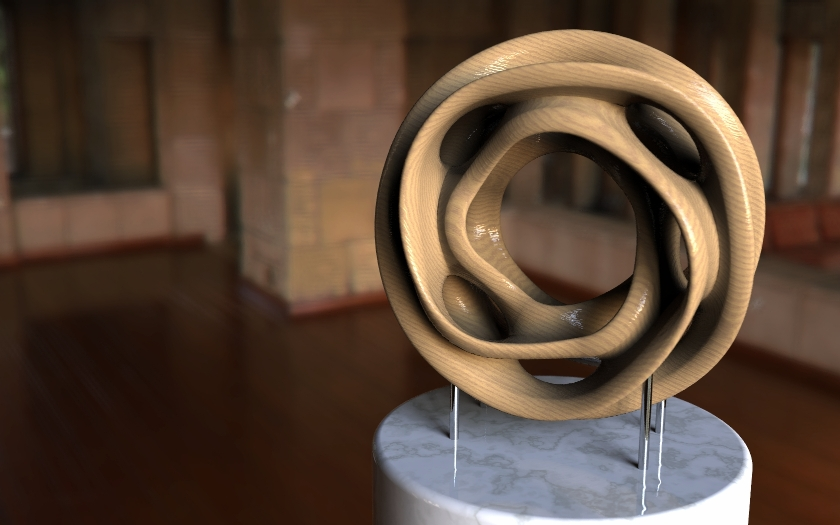

Some Cool Renders
Projection of a Hypercube - Animation Showing a Rotation
From the University of Kentucky Department of Mathematics [link]
- Here is a cool animation made by the University of Kentucky of a rotating hypercube. I don't quite know what a hypercube is, but it looks cool.
- It is obvious some very advanced modeling techniques went into this animation. We also get to see the basic animation abilities of POV-Ray.
- To make the hypercube, the creator made a set of vertexes, and then made polygons between them creating the final shape.
Scherk-Collins Sculpture
By Trevor G. Quayle [Link]

- This is a particularly interesting looking shape made by Trevor G. Quayle. I personally really enjoy the texturing done, the wood grain texture looks very smooth for such a complex shape.
- The sculpture mesh itself was not made in POV-Ray, but it looks great under POV-Ray's ray tracing.